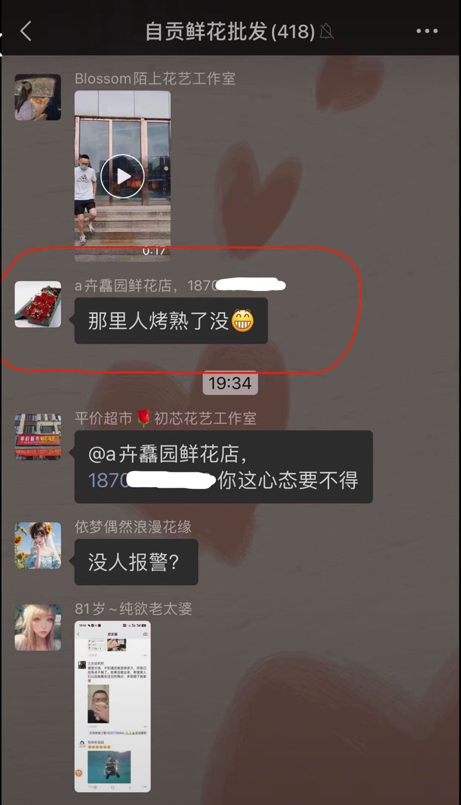

猫屎bot
@wind_dmr
RT @whyyoutouzhele: 7月18-19日，四川自贡百货大楼火灾致16人遇难，市民自发到九鼎大楼旁鲜花悼念。
一花店老板在微信群发布不良言论，花店门口被陌生人撒冥钱。

李老师不是你老师
@whyyoutouzhele
7月18-19日，四川自贡百货大楼火灾致16人遇难，市民自发到九鼎大楼旁鲜花悼念。
一花店老板在微信群发布不良言论，花店门口被陌生人撒冥钱。
https://t.co/PZJcsNkFKB https://t.co/Tqukomyt0C